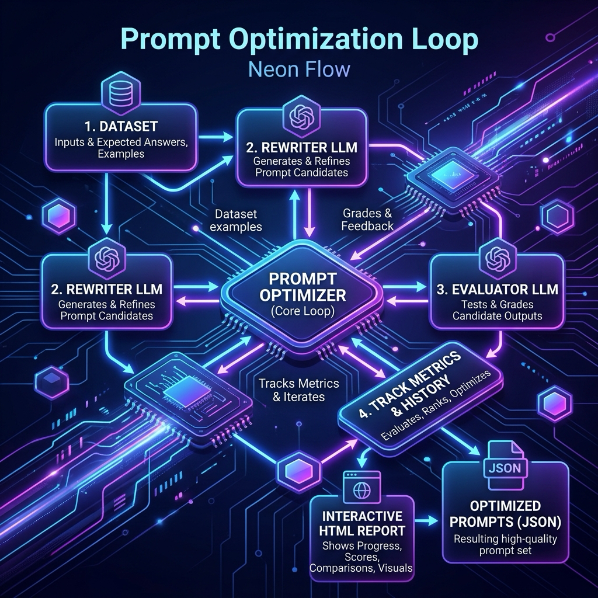

Prompt optimization¶
Agentomatic evaluates an agent against a labelled dataset, searches for a better prompt or runtime configuration, validates the candidate on held-out examples, and only then offers to write a new prompt version. It does not alter live traffic, route versions, or promote deployments. Treat a generated version as a candidate: review it, run your deployment verification, then release it through your normal delivery process.

Choose one entry point¶
There are three supported entry points. They share the same dataset format but serve different integration needs. Pick one for a run; they are alternatives, not steps to chain together.
| Use case | Supported entry point | What it talks to |
|---|---|---|
| Optimize a deployed agent from a terminal | agentomatic optimize |
The running Agentomatic API (--host) |
| Optimize an in-process agent with full control over metrics and search space | PromptFitter |
A local agent instance or the API |
| Keep an existing integration working | PromptOptimizer / --mode prompt_only |
The running Agentomatic API |
For new work, use the CLI with a fitter mode or use PromptFitter directly.
PromptOptimizer remains supported for backwards compatibility, but has a
smaller search surface.
Before you start¶
Install the optimization dependencies and create a dataset with a stable, measurable expectation for each request:
{"query":"What is the refund period?","expected_answer":"30 days"}
{"query":"How do I reset my password?","expected_answer":"reset, password"}
query is required. expected_answer, context (a list of strings), and
metadata are optional. Use exact_match when the expected answer should
match exactly; use contains with comma-separated required phrases when a
response can vary in wording. For generative quality, use a calibrated judge
metric and a held-out test dataset.
Start the target platform before running the API-backed paths:
Recommended: CLI fitter modes¶
The CLI has two families. prompt_only is the legacy default; every other
mode uses the modern PromptFitter path.
# Prompt + configuration rewrite against the running agent.
agentomatic optimize support_bot \
--dataset eval.jsonl \
--val-dataset validation.jsonl \
--test-dataset holdout.jsonl \
--mode rewrite \
--metrics contains \
--llm omlx/Qwen3.5-9B-MLX-4bit \
--rewrite-llm omlx/Qwen3.5-9B-MLX-4bit \
--host http://127.0.0.1:8000 \
--max-trials 20 \
--apply
--apply writes a prompt version only when the result passes the fitter's
improvement and generalization guards. Omit it to inspect the report first.
The command writes reports and trial artifacts under .optimize/ by default.
Mode reference¶
| CLI mode | Fitter optimizer | Best for |
|---|---|---|
rewrite |
RewriteOptimizer |
Improving system instructions from failure patterns |
gepa_like |
GEPALikeOptimizer |
Targeted edits once evaluator feedback is useful |
mipro_like |
MIPROLikeOptimizer |
Exploring prompt and few-shot combinations |
few_shot |
FewShotBootstrapOptimizer |
Selecting strong demonstrations from labelled data |
param_search |
ParamSearchOptimizer |
Searching model, RAG, or tool parameter grids |
apo |
APOOptimizer |
Trace-aware critique and edit search |
--mode accepts exactly the values in the first column plus prompt_only.
The fitter API also accepts the aliases mipro, gepa, and
few_shot_bootstrap; prefer the CLI spellings above in new scripts.
Parameter-only search¶
Use a search space to make the allowed changes explicit. This avoids an optimization run silently tuning parameters you did not intend to change.
# search-space.yaml
optimize_system_prompt: false
optimize_few_shot: false
optimize_model_params: true
search_method: tpe
model_param_space:
temperature: [0.0, 0.2, 0.5]
top_p: [0.8, 0.95]
rag_param_space:
top_k: [3, 5, 8]
agentomatic optimize support_bot \
--dataset eval.jsonl \
--mode param_search \
--search-space search-space.yaml \
--search-method tpe \
--no-optimize-prompt \
--param temperature=0.0,0.2,0.5 \
--max-trials 18
--param adds or replaces a model parameter grid entry. --search-method
accepts grid, random, or tpe. For apo, --node-match scopes trace
critique to matching graph-node or subagent names; --n-runners sets fitter
evaluation concurrency.
Run agentomatic optimize --help for the complete, version-specific CLI
contract. Do not use undocumented commands such as agentomatic eval,
agentomatic route, or agentomatic promote: they are not Agentomatic CLI
commands.
Modern Python API: PromptFitter¶
Use PromptFitter when your application already owns the agent instance or
needs custom metrics, callbacks, and search spaces. The example below uses a
local agent and an oMLX-compatible endpoint for all optimizer model calls.
from agentomatic.optimize import (
Dataset,
ExactMatchMetric,
PromptFitter,
PromptSearchSpace,
)
# Import and construct your project's BaseGraphAgent subclass.
from agents.support_bot.agent import SupportBotAgent
dataset = Dataset.from_list(
[
{"query": "What is the refund period?", "expected_answer": "30 days"},
{"query": "How do I reset my password?", "expected_answer": "reset password"},
{"query": "Where is my order?", "expected_answer": "tracking"},
{"query": "Can I change an address?", "expected_answer": "before shipping"},
]
)
trainset, valset = dataset.split(ratio=0.75)
search_space = PromptSearchSpace(
optimize_system_prompt=True,
optimize_few_shot=False,
optimize_model_params=True,
model_param_space={"temperature": [0.0, 0.2]},
)
fitter = PromptFitter(
agent="support_bot",
local_agent=SupportBotAgent(),
task_model="omlx/Qwen3.5-9B-MLX-4bit",
rewrite_model="omlx/Qwen3.5-9B-MLX-4bit",
llm_base_url="http://127.0.0.1:8000/v1",
llm_api_key="local",
optimizer="rewrite",
search_space=search_space,
max_trials=12,
)
result = await fitter.fit(trainset, valset, ExactMatchMetric())
print(result.summary())
# Writes prompts.json only when the acceptance and generalization checks pass.
result.apply(version="v2_fit", agent_dir="agents/support_bot")
Use a realistic validation set. If you do not supply testset to fit, the
fitter reserves a holdout slice automatically when possible. Pass a separate
testset when you have one:
Metrics¶
Metrics are async and are evaluated for each candidate. The core options are:
from agentomatic.optimize import (
CompositeMetric,
ContainsMetric,
ExactMatchMetric,
LLMJudgeMetric,
)
deterministic = CompositeMetric([ExactMatchMetric(), ContainsMetric()])
judge = LLMJudgeMetric(
criteria="The answer must be accurate, concise, and safe.",
model="omlx/Qwen3.5-9B-MLX-4bit",
)
Start with deterministic metrics where a response contract permits them. Judge metrics are useful for open-ended quality, but require a reachable model and a rubric that is stable enough to compare candidates fairly.
Result and apply safeguards¶
PromptFitResult records the baseline and best scores, trial history,
suggested parameter changes, failure clusters, and any holdout score:
print(result.best_prompt)
print(result.best_params)
print(result.absolute_improvement)
print(result.holdout_score)
print(result.generalization_gap)
print(result.to_dict())
result.apply(...) refuses a non-improving candidate by default and can reject
a candidate with an excessive generalization gap. Review the report and use
force=True only when an operator has deliberately accepted that risk.
Compatibility API: PromptOptimizer¶
PromptOptimizer and CLI --mode prompt_only remain available for existing
API-backed integrations. It supports three legacy strategies only:
iterative_rewrite, few_shot, and chain_of_thought.
from agentomatic.optimize import Dataset, PromptOptimizer
optimizer = PromptOptimizer(
agent="support_bot",
metrics=["contains"],
strategy="iterative_rewrite",
llm="omlx/Qwen3.5-9B-MLX-4bit",
api_base="http://127.0.0.1:8000",
)
dataset = Dataset.from_jsonl("eval.jsonl")
result = await optimizer.optimize(
dataset=dataset,
max_iterations=10,
target_score=0.9,
)
print(result.report())
Equivalent CLI:
agentomatic optimize support_bot \
--dataset eval.jsonl \
--mode prompt_only \
--strategy iterative_rewrite \
--host http://127.0.0.1:8000
Do not use old names such as mipro, ensemble, or
bootstrap_randomsearch with --strategy; they are not legacy CLI strategy
values. Use the fitter modes above instead.
Advanced extensions¶
These are extensions to PromptFitter, not additional quick-start paths.
Callbacks and reports¶
Use callbacks when a long-running fit needs an operator-visible stopping or
checkpoint policy. PromptFitter accepts them directly:
from agentomatic.optimize import EarlyStopping, ModelCheckpoint, PromptFitter
fitter = PromptFitter(
agent="support_bot",
optimizer="gepa_like",
callbacks=[
EarlyStopping(monitor="score", patience=3, min_delta=0.01),
ModelCheckpoint(save_dir="optimization_results/support_bot"),
],
)
The fitter generates a report by default. For a serializable result from any supported path, create a standalone HTML report with:
from agentomatic.optimize import generate_html_report
report_path = generate_html_report(result, output_path="reports/support-fit.html")
Synthetic seed data¶
DataSynthesizer is a Python API for creating a seed dataset; it is not an
agentomatic dataset CLI command. Always review generated examples and keep a
separate human-verified validation set.
from agentomatic.optimize import DataSynthesizer
synthesizer = DataSynthesizer(model="omlx/Qwen3.5-9B-MLX-4bit")
dataset = await synthesizer.generate(
description="A support assistant that explains order status and refunds.",
n_samples=40,
categories=["orders", "refunds"],
)
dataset.to_jsonl("seed-eval.jsonl")
Scaffolded training scripts¶
Class-agent project templates may include train.py and eval.py helpers.
They use TrainCliSettings, train_and_report, and the same fitter
primitives described here; they are project scripts, not global
agentomatic train or agentomatic eval commands. Use the generated script's
--help output as its contract, and keep agent-specific metrics and schema
requirements in that project.
Local oMLX verification¶
The live optimization tests exercise the actual OpenAI-compatible provider path. Point them at a real local model rather than demo mode:
export OMLX_BASE_URL=http://127.0.0.1:8000/v1
export OMLX_API_KEY=local
export AGENTOMATIC_LIVE_MODEL=omlx/Qwen3.5-9B-MLX-4bit
uv run pytest tests/test_live_omlx_optimize.py \
tests/test_live_omlx_keras_optimize.py \
-q --override-ini='addopts='
Those tests are intentionally skipped when no reachable model endpoint is configured. The standard test suite still verifies deterministic optimizer logic, but a production rollout should run the live suite with a real model and your own representative evaluation dataset.
Production checklist¶
- Keep a labelled validation set and a separate held-out test set.
- Use a deterministic metric or a calibrated judge before trusting a score.
- Run without
--applyfirst and review the report, prompt diff, and failure clusters. - Verify the saved version in a staging deployment with the same auth, connections, tools, and model configuration as production.
- Run the deployment verifier before promoting the application through your normal release process.